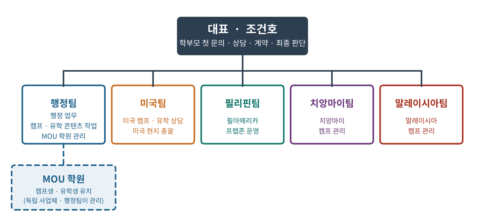

내부 확인 내용(2026.10), 미국 본부장 안내 메시지, B2B 학원 업무협약서, 구글 드라이브 캠프 자료
01한눈에 보기
인투유학은 대표 아래 행정팀과 네 곳의 현지 팀(미국 · 필리핀 · 치앙마이 · 말레이시아)으로 움직입니다. 행정팀은 회사 안쪽 일을 전부 맡고, 현지 팀은 각 나라에서 학생과 학부모를 실제로 받고 만납니다. MOU 학원은 학생을 데려오는 바깥 파트너이고, 관리 창구는 행정팀입니다.
이 문서를 먼저 읽는 이유
모든 매뉴얼의 상황 카드에는 사람 이름 대신 역할명(대표, 행정팀장, 미국 본부장 등)만 적혀 있습니다.
역할과 실제 사람의 연결은 이 조직도에서만 관리합니다. 사람이 바뀌면 이 문서의 3장 표만 고치면 되고, 나머지 매뉴얼은 그대로 씁니다.
02내부 조직도

팀
하는 일
대표
학부모 첫 문의와 상담, 신규 파트너 학원 상담·계약, 돈·계약·분쟁·민원의 최종 판단
행정팀
① 행정 업무 전반 ② 캠프·유학 콘텐츠 작업(안내 자료, 브로셔, 포스터, 영상) ③ MOU 학원 관리(연락 대응, 자료 공유, 커미션 정산 실무). 자료 정리(구글 드라이브)와 매뉴얼 업로드도 행정팀이 합니다.
미국팀
미국 캠프와 유학 상담, 미국 현지 운영 총괄. 항공권·ESTA·여행자보험 대행 안내도 합니다.
필리핀팀
필아메리카존 운영. 미국 유학을 준비하는 프렙과정(6개월)과 필리핀 어학 캠프를 맡습니다. 자세한 내용은 04번.
치앙마이팀
치앙마이 캠프 관리 (부모 동반 영어 캠프)
말레이시아팀
말레이시아 캠프 관리 (INTI 대학 어학 캠프)
MOU 학원
캠프생·유학생 유치. 협약을 맺은 독립 사업체이며 인투유학 직원이 아닙니다(협약서 제3조). 조직도에 점선으로 둔 것은 "행정팀이 관리 창구"라는 뜻입니다. 자세한 내용은 06번.
03역할과 현재 담당자
사람이 바뀌면 이 표만 고칩니다. 매뉴얼 카드의 "담당"은 여기 역할명을 가리킵니다.
역할
현재 담당
주요 업무
맡은 매뉴얼
대표
조건호
학부모 첫 문의·상담, 신규 협약 상담·계약, 프로그램별 커미션 안내, 돈·계약·분쟁 최종 판단
—
행정팀장
하영광
행정팀 총괄, 직원들의 업무 문의 1차 창구
02 · 03 · 04
행정 직원
하준
행정 업무, 캠프·유학 콘텐츠 작업, MOU 학원 대응
01 · 05 · 08
행정 직원
요엘
행정 업무, 캠프·유학 콘텐츠 작업, MOU 학원 대응
06 · 07 · 09
미국 본부장
줄리엣
미국 캠프·유학 상담, 미국 현지 총괄
—
필리핀팀 담당
드보라
필아메리카존 프렙과정 · 필리핀 어학 캠프 운영
—
치앙마이팀 담당
[확인 필요]
치앙마이 캠프 관리
—
말레이시아팀 담당
[확인 필요]
말레이시아 캠프 관리
—
00 조직도, 10 잠재고객 관리, 11 캠프 사전 자료 제작, 부록(카드 인덱스)은 행정팀이 함께 관리합니다.
04현지 팀이 맡는 프로그램
현재 드라이브 자료로 확인된 프로그램입니다. 시즌이 바뀌면 이 표부터 고칩니다.
팀
프로그램
대상 · 기간
상세
미국팀
스쿨링 캠프, 학부모 동반 가을·겨울 캠프, 비전트립, 조기유학, 블린→텍사스 A&M 대학 유학
초5~고2(초4 이하 부모 동반), 4주~
03 · 04
필리핀팀
필아메리카존 프렙과정 — 미국 유학 준비(토플 집중 → 유학 실전 → 입학 행정)
고교 졸업·검정고시·GED 합격자, 6개월, 1월·7월 입소
04
필리핀팀
필리핀 어학 캠프
초5~성인, 4주 · 8주
03
치앙마이팀
부모 동반 치앙마이 영어 캠프
유치원~초등 자녀 동반 가족, 2027.01.04~01.29, 선착순 5가정
03
말레이시아팀
INTI 대학 어학 캠프
중3~대학생, 4주, 선착순 20명
03
03 캠프 매뉴얼과 맞춰야 합니다
03번 캠프 매뉴얼(v1)에는 치앙마이 캠프가 아직 없고, 말레이시아 캠프도 [확인 필요]로만 적혀 있습니다. 03번을 고칠 때 이 표와 같게 맞춥니다.
날짜와 금액은 2026~2027 시즌 자료 기준입니다. 시즌이 바뀌면 이 표부터 고칩니다.
프로그램
장소
대상 · 조건
기간
특징
미국 스쿨링 캠프
텍사스 브라이언 · 코너스톤
초5~고2 단독 참가 (만 11세 이상)
매달 4주 과정 (상시 모집)
사립학교 정규 수업, 방과후, 기숙사 생활 훈련
학부모 동반 가을 스쿨링 캠프
텍사스 사립학교
초5 이상 단독, 초4 이하 부모 동반 필수, 선착순 10명
09.23(목)~10.20(수), 4주, 연장 가능 [확인 필요: 연도]
현지 수업 + 문화체험 + 부모 아카데미
학부모 동반 겨울 스쿨링 캠프
텍사스 + LA 탐방
초1~11학년, 초4 이하 부모 동반 필수, 선착순 10명
1차 2027.01.02~01.29 / 2차 2027.01.29~02.25, 8주·12주 연장 가능
사립학교 수업, 텍사스 4대 도시, LA 탐방
비전트립 (가족 동반)
텍사스 4개 도시
12명 한정 선착순
2026.10.04~10.12 (8박 9일)
부모 아카데미, 개인 상담, 도시·대학 탐방
필리핀 영어 집중 캠프
카비테주 다스마리냐스
초5부터
4주 · 8주
하루 6시간 원어민 수업, 24시간 English Policy, 회화·토플 과정
미국 진로 설계 · 스포츠&투어, 말레이시아 캠프
[확인 필요]
[확인 필요]
2026 여름 일정만 협약서 별첨에 있음
[확인 필요: 상세 내용]
코너스톤 캠프 참가 나이
만 5살부터 캠프 참가가 가능합니다.
초등 4학년까지는 학부모가 반드시 함께 와야 하고, 초등 5학년부터는 혼자 참가할 수 있습니다.
03미국 현지 캠프 생활
숙소
아파트형 기숙사 2인 1실. 남녀를 구분해 배정하고 유학생 멘토가 생활을 챙깁니다. 수영장·헬스장·야외 그릴장·농구장·발리볼 코트가 있습니다. 1인 1실을 원하면 1인당 60만 원을 추가합니다.
교육 공간
현지 건물을 임대한 교육관에서 공부하고, 공부가 끝나면 기숙사로 돌아갑니다.
식사
아침 현지식(빵·우유·오트밀·수프 등), 점심·저녁 한식(특식은 현지식), 학교 점심은 센터가 만든 수제 도시락. 식사 당번(설거지·테이블)을 멘토 지도 아래 함께 합니다. 개인 식단 조절은 어렵고, 밑반찬을 가져오면 함께 나눌 수 있습니다. 문화체험 외식은 참가비에 포함되지 않습니다. 2주에 한 번 개인 간식 쇼핑을 합니다.
이동
여행팀 전용 차량(15인승, 8인승 등)이 기본이고, 일부 도시에서는 대중교통·도보를 이용합니다.
핸드폰
캠프 중에는 핸드폰을 걷어서 관리합니다.
취침 · 자습
초등 9시 30분 / 고등 10시 30분~11시 30분. 11시 30분 이후에는 자습할 수 없습니다.
방과후 · 투어
학교 일정이 끝난 뒤 일정을 알차게 운영하고, 일주일에 두 번 정도 스몰투어를 합니다.
영어책 완독
아이엠보카를 통해 영어책 한 권을 미국에서 끝냅니다. 주변에 도서관이 있습니다. "학교에서 7분 거리" [확인 필요: 7분 거리가 숙소인지 도서관인지]
시즌별 투어
LA는 여름·겨울 캠프에만 갑니다. 가을에는 범고래 쇼, NBA 경기, 풋볼 경기를 봅니다. [확인 필요: 범고래 쇼 장소·홈페이지 링크]
가디언
인투유학이 공식 가디언을 두고 있습니다. 현지에서 30년째 거주한 시민권자입니다.
부모 프로그램 (학부모 동반 캠프 · 비전트립)
부모 아카데미: 미국 입시(조기유학·대학 입학), 미국 비자 및 이민, 유학생 생활, 대학 장학금 설명회
교육 강의: 4차 산업혁명 시대에는 공부를 어떻게 할 것인가
1:1 진로 상담 (학생 진로, 미국 유학, 대학 진학)
가족과 함께 밖으로 나가 시간을 보내는 일정
상담 때 쓸 수 있는 이야기
영어책 한 권을 미국에서 끝내고 온 아이가, 한국에 돌아가 서점에 가서 직접 영어책을 샀다는 이야기가 있습니다. 처음에는 반강제로 시작하더라도 아이들이 즐겁게 합니다. (미국 본부장 설명)
범고래 쇼는 "미국에만 있는"이라고 소개하지 않습니다. 다른 나라에도 범고래를 볼 수 있는 시설이 있을 수 있어 사실과 다를 수 있습니다.
04등록 절차
자료로 확인된 흐름입니다. 빈칸은 확인되는 대로 채웁니다.
단계
내용
근거
① 문의 접수
파트너 학원 소개, 설명회, 학부모 직접 문의 모두 대표가 직접 받습니다. (031-334-2414 · 카톡 historymaker911)
내부 확인, 세미나 브로슈어
② 상담
대표가 상담합니다. 파트너 학원은 상담 지원과 연결까지만 하고, 계약·등록은 본사가 합니다.
졸업생 Yale, NYU, UT-Austin, Texas A&M 등. 안내할 때는 "학교 안내 기준이며 개별 결과는 다를 수 있습니다"를 꼭 붙입니다.
관리형 보딩 프로그램 (1년, 코너스톤 브로셔)
금액
관리형 보딩비 (숙식·생활관리)
$24,000
컨설팅 비용 (최초 1회)
$3,500
학비 (파트너십 장학 40% 적용, 정가 $9,842.13)
$5,905.28
학교 등록비 (매년)
$350
합계 (장학금 적용가)
$33,755.28
인투유학 브로셔에는 "학비 $9,723/년 · 보딩비 $1,200/월"로 따로 적혀 있습니다. 두 자료의 비용 기준이 다르므로 [확인 필요: 어느 쪽을 안내할지] 확인 전에는 관리형 보딩 금액으로만 안내합니다.
포함 내용: 2인 1실 기숙, 예방접종·건강검진·병원 동행, 수제 도시락, 등·하교 라이드, 주간 쇼핑, 방과후 학업관리(매일 2시간), 아카데믹 어드바이저, SAT·GPA 관리, 격달 리포트, 학기별 대학·시티 투어(연 2회), 월 1회 로컬 액티비티, 직업인 초청 강연
컨설팅 비용에 포함: 학교 매칭, 입학 수속, 서류 준비·번역, I-20 발급 지원, F-1 비자 수속, 출국 전 오리엔테이션, 첫 입국 공항 픽업
준비 서류: 여권 사본·사진, 최근 학년 영문 성적표, 재학·졸업 증명서, 영문 재정 증명서, 예방접종 기록, 입학 지원서
유학생 1인 1실: [확인 필요: "불가"인지 "매달 150만 원 추가"인지]
텍사스 주립대 in-state 학비 (브로셔의 "75% 대학장학금")
브로셔에는 "고등학교 3년(36개월)을 다니고 졸업하면 유학생도 텍사스 주립대에 in-state로 갈 수 있다"고 되어 있습니다.
2025년 6월 연방법원 판결로 텍사스의 in-state 학비 규정이 체류 자격이 없는 학생에게는 적용되지 않게 되었고, 이후 텍사스 행정 규칙도 개정되었습니다.
유학생(F-1)에게 이 경로가 지금 어떻게 적용되는지는 확인되지 않았습니다 [확인 필요]. 확인 전에는 학부모에게 in-state 장학을 확정된 혜택처럼 말하지 않고 대표에게 넘깁니다.
미국 대학 유학 — 블린 칼리지 → 텍사스 A&M
경로 (세미나 브로슈어 입시 로드맵)
구성
코너스톤 졸업 → A&M
고등 3년 + 대학 4년
코너스톤 졸업 → 블린 → A&M
고등 3년 + 블린 2년 + A&M 2년
한국 고교 졸업 → 프렙 → 블린 → A&M
프렙 6개월 + 블린 2년 + A&M 2년
GED(미국 검정고시) → 프렙 → 블린 → A&M
프렙 6개월 + 블린 2년 + A&M 2년
블린 칼리지
텍사스 Top 5 커뮤니티 칼리지, 전공 150개, A&M과 약 20분 거리
블린 입학 영어
TOEFL iBT 61 이상 (또는 Duolingo 95, IELTS 5.5) — A&M 편입을 목표로 하면 TOEFL 80 이상
토플 준비
필리핀 필아메리카존 프렙과정(6개월)에서 준비합니다. 아래 "필아메리카존 프렙과정"을 보세요.
블린 1년 비용
총 $31,020 (I-20 신청비, 학비, 픽업, 보험, 용돈, 유학센터 입소비·보딩비, 디파짓 포함 — 블린 브로셔)
텍사스 A&M
공립 연구중심 대학, 공대 전미 10위(브로셔 기재), 입학 TOEFL 80, 1년 예상 비용 $62,271.60(브로셔)
Corps of Cadets
군대식 훈련으로 리더를 기르는 A&M 학생 조직으로 ROTC와 비슷합니다. 힘들어서 중간에 나올 수는 있지만 다시 들어가기는 어려울 수 있습니다. 연 약 $40,000 학비를 약 $10,000 수준으로 감면받은 사례가 있습니다(브로셔: 유학생 신청 가능, 학비 75% 면제, 졸업 후 군 복무 의무 없음) [확인 필요: 현재 장학 조건]
미국 유학 준비 — 필아메리카존 프렙과정 (필리핀)
한국 고교 졸업자가 미국 대학으로 가기 전, 필리핀에서 6개월 동안 영어와 생활 습관을 함께 준비하는 과정입니다. 단순 어학연수가 아니라 토플 점수, 자기 주도 생활, 해외봉사 경력을 함께 쌓는 것이 특징입니다.
기간 · 입소
6개월. 상·하반기 각 1기수로 1월 또는 7월 입소. 기수제 소수 집중 관리
흐름
1~2개월 토플 집중 → 3개월차부터 유학 실전·고급 회화 + 입학 행정 → 한국 입국·비자 인터뷰 → 7월 또는 12월 미국 입국
준비하는 세 가지
① 글로벌 영어역량(단기 토플 고득점, 유학 실전, 고급 영어, 24시간 영어 몰입) ② 자기주도형 생활 역량(시간·공간·건강 관리) ③ 글로벌 리더십 포트폴리오(월 2회 해외봉사, 사회공헌 프로젝트, 봉사활동 인증서)
하루 일과
아침 운동·식사·리딩·조회 → 영어 몰입 수업(단어/문장, 토플 전 영역, 기초 전공 선행, 퍼블릭 스피킹, 영어 저널) → 자기주도 학습(목표 설정·모니터링) → 공동체 생활(자율경영 시간, 플래너 작성, 청소, 점호)
주말
주간 어휘·문장 마스터, 영어 리딩, 영어 저널, 주간 학습 목표 설정, 자유 시간·운동, 월 2회 해외봉사, 월 1회 쇼핑·문화 체험
캠퍼스
마닐라에서 남쪽으로 약 30km 떨어진 조용한 마을. 기숙사·강의실·야외 운동장을 갖춘 독립형 캠퍼스
입소 — 학력
국내외 고등학교 졸업자, 또는 졸업학력 인정자(대입 검정고시 합격자, 미국 GED 취득자 등)
입소 — 어학
ETS 토플 모의고사 3.5 이상(구 토플 60점) 또는 CEFR 레벨테스트 B2 이상
항목
금액
비고
컨설팅 비용
150만 원
최초 1회
SSP 발급
18만 원
최초 1회 · 외국인이 필리핀 교육기관에서 정식으로 공부하기 위해 필리핀 이민국이 발행하는 허가증
왕복 픽업비
14만 원
최초 1회
교육비
매월 170만 원
숙식비 · 수업료 · 행정비 포함
6개월 기준 합계
약 1,202만 원
최초 1회 182만 원 + (170만 원 × 6개월) [추정: 브로슈어에 합계 표기는 없어 계산한 금액]
안내할 때 주의
위 금액에 들어 있지 않은 것: 왕복 항공료, 미국 대학 지원비, 미국 비자 비용, 개인 용돈. 필리핀 체류에 필요한 비자(SSP) 비용은 들어 있습니다.
토플 실적(브로슈어 기준): 1기 97점, 2기 88점, 3기 96점, 4기 94점, 5기 86점, 6기 102점. 안내할 때는 개별 결과는 다를 수 있다는 점을 함께 말합니다.
"미국 대학 한인 유학생 졸업률 50~60%" 같은 수치는 출처가 확인되지 않아 학부모 안내에 쓰지 않습니다 [확인 필요: 근거 자료].
말레이시아 유학 — INTI · HELP
경로: ① 말레이시아 → 영국·호주 편입 ② 말레이시아에서 영국·호주 학위 취득(트위닝) ③ 말레이시아 학위
입학: 한국 고등학교 졸업(검정고시 포함), 토플 50~60점대로도 입학 가능(브로셔)
비용 비교(브로셔): 인티대학 2년 1만 달러 이하 / 미국 대학 2년 2만~5만 달러 이상
05현지 생활 · 관리
숙소는 2인 1실 생활 시설입니다.
현지 건물을 임대한 교육관에서 공부하고, 공부가 끝나면 기숙사로 돌아갑니다.
인투유학이 공식 가디언을 두고 있습니다. 현지에서 30년째 거주한 시민권자입니다.
현지 학생들과 함께 생활하기 때문에 영어를 쓸 수밖에 없는 환경입니다. (인종으로 설명하지 않습니다)
06상황별 대응 카드
STU-01"공립학교는 무료라던데요?"
이런 말이 들어오면
"공립학교 보내면 학비 안 들지 않나요?"
담당 · 회신
대표 (파트너 학원의 일반 문의는 행정팀) · 당일 회신
대응 메시지
카톡 원문 — 그대로 복사해서 사용
학부모님, 많이 물어보시는 부분이에요.
미국 공립학교가 무료인 것은 미국 학생 기준입니다.
유학생(F-1 비자)은 공립 고등학교에 최대 12개월만 다닐 수 있고, 그 기간의 교육비도 전액 내야 합니다. 초·중학교 과정은 공립으로 유학할 수 없습니다.
그래서 보통의 유학생은 대학 진학까지 이어갈 수 있는 사립학교로 갑니다. 자녀 학년을 알려주시면 맞는 경로를 안내드릴게요.
하면 안 되는 말
공립학교를 특정 집단(이민자 등)을 들어 깎아내리는 말
넘기는 기준
비용 협의·장학·입학 가능 여부 판단은 대표
근거
미국 국무부 "Foreign Students in Public Schools"
STU-02"그 학교 인가받은 곳인가요?"
이런 말이 들어오면
"한국에서 성적 인정되나요?", "학교가 믿을 만한가요?"
담당 · 회신
대표 (파트너 학원의 일반 문의는 행정팀) · 당일 회신
대응 메시지
카톡 원문 — 그대로 복사해서 사용
학부모님, 꼭 확인하셔야 하는 부분을 물어봐 주셨어요.
미국은 학교를 먼저 세우고 나중에 인가를 받을 수 있어서, 인가받지 않은 학교를 소개하는 경우도 있습니다.
저희가 소개하는 코너스톤은 AdvancED(현재 Cognia) 정식 인가 학교입니다.
한국 성적 인정 관련 서류는 {안내 방법}으로 확인해 드리겠습니다. [확인 필요]
하면 안 되는 말
특정 유학원을 사기라고 지목하는 말
넘기는 기준
비용 협의·장학·입학 가능 여부 판단은 대표
근거
미국 본부장 설명, 코너스톤 브로셔
STU-03"텍사스는 치안이 괜찮나요?"
이런 말이 들어오면
"미국 총기 사고 뉴스 보면 걱정돼요"
담당 · 회신
대표 (파트너 학원의 일반 문의는 행정팀) · 당일 회신
대응 메시지
카톡 원문 — 그대로 복사해서 사용
학부모님, 치안을 가장 먼저 보시는 부모님이 정말 많으세요.
학교가 있는 브라이언·칼리지스테이션은 텍사스 A&M이 있는 조용한 교육 도시입니다.
아이들은 공식 가디언(현지 30년 거주 시민권자) 관리 아래 기숙사에서 생활하고, 등·하교도 라이드로 이동합니다.
생활 관리 방식을 더 자세히 설명드릴까요?
하면 안 되는 말
"전혀 위험하지 않다" 같은 보장
근거 없는 범죄율 수치 [확인 필요: 치안 비교 자료가 있을 때만 수치 사용]
넘기는 기준
비용 협의·장학·입학 가능 여부 판단은 대표
근거
코너스톤 브로셔, 미국 본부장 설명
STU-04"왜 LA가 아니라 텍사스예요?"
이런 말이 들어오면
"미국이면 LA나 동부가 낫지 않나요?"
담당 · 회신
대표 (파트너 학원의 일반 문의는 행정팀) · 당일 회신
대응 메시지
카톡 원문 — 그대로 복사해서 사용
학부모님, 주를 고를 때 보통 비용, 치안·안전, 대학 수준을 봅니다.
텍사스는 생활비 부담이 상대적으로 덜하고, 텍사스 A&M 같은 주립대로 이어지는 경로가 있으며, 학교가 있는 지역은 조용한 교육 도시입니다.
자녀에게 어떤 기준이 가장 중요한지 알려주시면 비교해서 설명드리겠습니다.
하면 안 되는 말
"LA보다 40% 싸다" — 근거 자료 확인 전 사용 금지
넘기는 기준
비용 협의·장학·입학 가능 여부 판단은 대표
근거
미국 본부장 설명, 인투유학 브로셔(Why Texas)
STU-05조기유학 1년 비용 문의
이런 말이 들어오면
"1년에 총 얼마 들어요?"
담당 · 회신
대표 (파트너 학원의 일반 문의는 행정팀) · 당일 회신
대응 메시지
카톡 원문 — 그대로 복사해서 사용
학부모님, 안녕하세요.
코너스톤 관리형 보딩 프로그램은 1년 기준 $33,755.28입니다(파트너십 장학 40% 적용가).
· 관리형 보딩비(숙식·생활관리) $24,000
· 컨설팅 비용(최초 1회) $3,500
· 학비(40% 장학 적용) $5,905.28
· 학교 등록비(매년) $350
환율과 개인 상황에 따라 달라질 수 있고, 정확한 납입 일정은 상담 때 안내드리겠습니다.
하면 안 되는 말
원화 금액을 확정 금액처럼 말하는 것(환율 변동)
넘기는 기준
비용 협의·장학·입학 가능 여부 판단은 대표
근거
코너스톤 브로셔
후속 · 기록
두 브로셔의 비용 기준 차이 [확인 필요] 확인 후 이 카드를 갱신합니다.
STU-06"몇 학년에 보내는 게 좋아요?"
이런 말이 들어오면
"지금 중1인데 언제 가는 게 좋을까요?"
담당 · 회신
대표 (파트너 학원의 일반 문의는 행정팀) · 당일 회신
대응 메시지
카톡 원문 — 그대로 복사해서 사용
학부모님, 자녀의 목표(미국 대학 / 한국 대학)에 따라 시기가 달라집니다.
{자녀 학년과 목표에 맞는 경로 설명}[확인 필요: 시작 학년 기준 — 브로셔 7~12학년 / 본부장 설명 "8~9학년까지"]
협약서에 따라 학원 블로그, 인스타그램 등 SNS와 학원 내부 홍보물에 인투유학 로고와 프로그램 자료를 쓰실 수 있습니다.
저희가 드린 자료나 가이드라인 안에서 써 주시면 되고, 직접 만드신 홍보물은 올리시기 전에 한 번 보여주시면 확인해 드리겠습니다.
넘기는 기준
학부모 문의 연결·홍보 협의는 대표
근거
제5조②
MKT-04학원이 직접 만든 홍보물 확인 요청
이런 말이 들어오면
"이렇게 만들어 봤는데 괜찮을까요?"
담당 · 회신
행정팀 · 1영업일 [제안]
대응 메시지
카톡 원문 — 그대로 복사해서 사용
원장님, 만들어 주셔서 감사합니다.
확인해 보니 {수정할 부분}만 바꿔 주시면 좋겠습니다.
· 금액·일정: 최신 자료 기준으로 {내용}
· 표현: "{표현}"은 결과를 보장하는 것처럼 보일 수 있어 "{대체 표현}"으로 부탁드립니다.
수정본 보내 주시면 다시 확인해 드릴게요.
하면 안 되는 말
금액·일정이 틀린 채로 "괜찮아요"라고 넘기는 것
넘기는 기준
표현 판단이 어려우면 대표
근거
제5조②③
MKT-05후기 · 사진 사용 요청
이런 말이 들어오면
학원 원장님이 "캠프 다녀온 학생 사진 홍보에 써도 돼요?"
담당 · 회신
행정팀 · 당일 회신
대응 메시지
카톡 원문 — 그대로 복사해서 사용
원장님, 안녕하세요.
학생 사진과 후기는 보호자 동의를 받은 것만 쓸 수 있어서, 먼저 학부모님 동의를 확인하겠습니다.
동의가 확인된 자료로 보내드리겠습니다.
하면 안 되는 말
동의 확인 없이 사진을 보내는 것
넘기는 기준
학부모 문의 연결·홍보 협의는 대표
후속 · 기록
동의 여부와 사용 범위를 기록합니다.
MKT-06학원이 학부모 문의를 넘겨줄 때
이런 말이 들어오면
"우리 학원 학부모님이 궁금해하시는데 연락해 주실 수 있어요?"
담당 · 회신
행정팀 · 당일 회신
대응 메시지
카톡 원문 — 그대로 복사해서 사용
원장님, 연결해 주셔서 감사합니다.
학부모님 성함과 연락처, 자녀 학년, 궁금해하시는 프로그램을 알려주시면 대표님께서 직접 연락드리겠습니다.
학부모님께 저희가 연락드린다는 점을 미리 말씀해 주시면 더 편하게 상담하실 수 있어요.
넘기는 기준
대표 (학부모 첫 문의는 대표)
후속 · 기록
10번 잠재고객 기록에 소개 경로(학원명)를 적습니다. 학부모 동의를 받고 연락처를 받았는지 확인합니다 [제안].
08확인 필요 항목 (담당자 질문지)
답이 정해지면 오른쪽 칸에 적고, 본문의 [확인 필요] 표시를 고친 뒤 버전을 올립니다.
No
확인할 내용
답변 · 결정 (날짜 / 결정자)
1
현재 운영 채널 목록(카카오톡 채널, 블로그, 유튜브 등)과 운영 담당
2
로고·브랜드 가이드라인 파일이 있는지
3
인쇄 홍보물(포스터·브로셔) 지원 기준 — 수량, 비용 부담, 배송
4
브로셔의 "보장" 문구(GPA 보장 등) 수정 여부
5
후기·사진 동의서 양식
6
방문판매 대상 학원 선정 기준과 방문 기록 방법
09변경 이력
버전
날짜
변경 내용
v1
초안
마케팅 운영 현황, 파트너 공동 마케팅
v2
2026.09.21
06번과 겹치는 내용 정리, 홍보 표현 규칙·후기 동의·성과 기록 추가, 상황 카드 6개 추가
INTO GLOBAL EDUCATION · 인투유학 운영 매뉴얼
08
비자 · 항공권 매뉴얼
항공권·ESTA·여행자보험 대행, 유학생 비자(F-1)와 출국 서류 안내를 담습니다.
매뉴얼
08 비자 · 항공권 매뉴얼
버전
v1 · 2026.09.21
관리 · 업로드
행정팀
작성 담당
하준
모를 때 묻는 곳
행정팀장 → 대표
관련 매뉴얼
02 CS · 03 캠프 · 04 유학
근거 자료
미국 본부장 안내 메시지, 비전트립 부모안내문, 코너스톤 브로셔, 블린 브로셔
01한눈에 보기
인투유학은 항공권, ESTA(미국 전자여행허가), 여행자보험 세 가지를 모두 대행할 수 있습니다. 유학생은 컨설팅 비용 안에 I-20 발급 지원과 F-1 비자 수속이 들어 있습니다.
STEP 1대행 여부 확인
▶
STEP 2선택 개수로 대행료 안내
▶
STEP 3필요 서류 받기
▶
STEP 4대행 진행
▶
STEP 5완료 안내 · 사본 전달
02대행 상품과 요금
선택
대행료
1개 선택
3만 원
2개 선택
5만 원
3개 모두 선택
6만 원
대상 상품: 항공권 / ESTA / 여행자보험 (미국 본부장 안내 기준)
[확인 필요: 1인 기준인지, 학생·부모 각각인지 · 결제 방법과 시점 · 항공권 요금 자체는 별도인지]
03용어 정리
용어
뜻
안내할 때
ESTA
비자면제프로그램 국가 국민이 관광·상용 등 90일 이내 단기 방문을 할 때 받는 미국 전자여행허가. 비자가 아닙니다.
"ESTA(미국 전자여행허가)"로 씁니다. "여행비자"라고 부르지 않습니다.
F-1
미국 학생 비자. 유학생이 받습니다.
유학 상담에서 사용
I-20
미국 학교가 발급하는 입학 허가 서류. F-1 비자 신청에 필요합니다.
블린 칼리지 I-20 신청비 $200 (블린 브로셔)
캠프 참가 학생의 입국 자격
캠프 학생이 현지 학교 정규 수업에 참여하는 경우, ESTA로 입국하는 것이 맞는지는 캠프 형태에 따라 달라질 수 있습니다. 학부모에게는 미국 본부장이 확인한 기준으로만 안내합니다 [확인 필요: 캠프 유형별 입국 서류 기준].
04유학생 비자 (F-1)
코너스톤 관리형 보딩 프로그램의 컨설팅 비용(최초 1회 $3,500)에는 아래가 포함됩니다(코너스톤 브로셔).
학교 매칭, 입학 수속
서류 준비 및 번역
I-20 발급 지원
F-1 비자 수속
출국 전 오리엔테이션
미국 첫 입국 시 공항 픽업
준비 서류(코너스톤 입학 안내): 여권 사본 및 사진, 최근 학년 영문 성적표, 재학·졸업 증명서, 영문 재정 증명서, 예방접종 기록, 입학 지원서. 블린 칼리지는 재정 증명으로 약 $31,162 이상 영문 은행 잔고 증명서(학기 시작 6개월 이내 발행)가 필요합니다(블린 브로셔).
05부모 동반 참가자 준비
운전 서류
국제운전면허증(반드시 출국 전 발급), 한국 운전면허증, 여권
미포함 항목
왕복 항공료, ESTA, 여행자보험, 개인 용돈 — 대행을 권할 수 있는 지점입니다.
06상황별 대응 카드
VISA-01항공권 · ESTA · 보험 대행 첫 안내
이런 말이 들어오면
"항공권은 어떻게 해요?", 출국 준비 단계의 학부모
담당 · 회신
미국 본부장 또는 행정팀 · 당일 회신
대응 메시지
카톡 원문 — 그대로 복사해서 사용
학부모님, 안녕하세요~ 반갑습니다.
인투유학 {팀명}{이름}입니다.
저희는 항공권, ESTA(미국 전자여행허가), 여행자보험 세 가지 모두 대행해 드리고 있습니다.